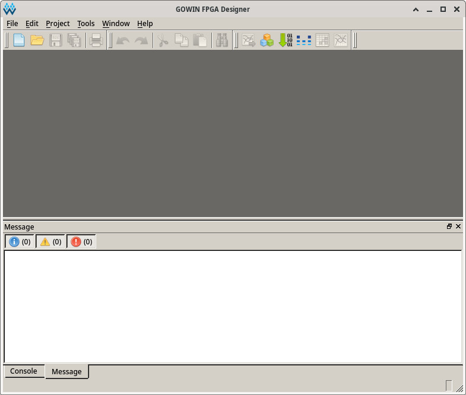

參考資訊：
https://wiki.sipeed.com/hardware/en/tang/Tang-Nano-4K/Nano-4K.html
$ cd $ mkdir gowin $ wget https://github.com/steward-fu/website/releases/download/lichee-tang-nano/Gowin_V1.9.10.03_Education_linux.tar.gz $ tar xvf Gowin_V1.9.10.03_Education_linux.tar.gz $ cd .. $ sudo mv gowin /opt/ $ /opt/gowin/IDE/bin/gw_ide
